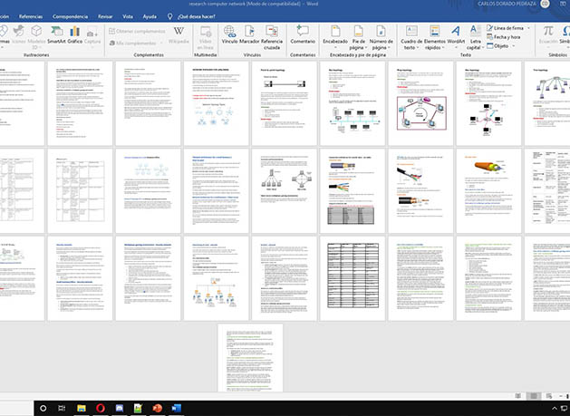
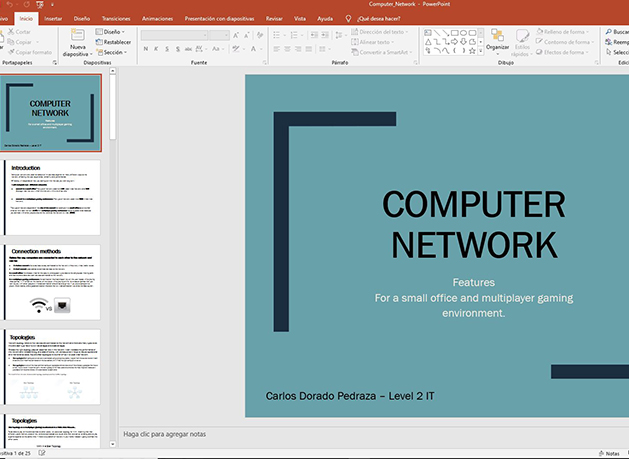
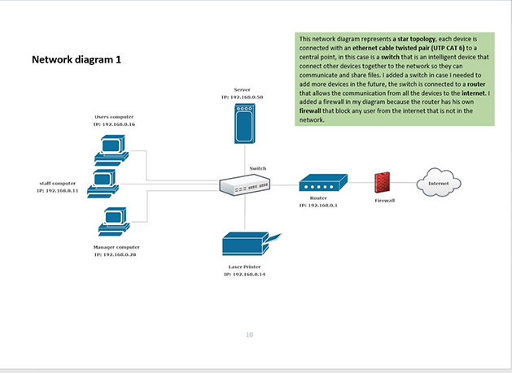
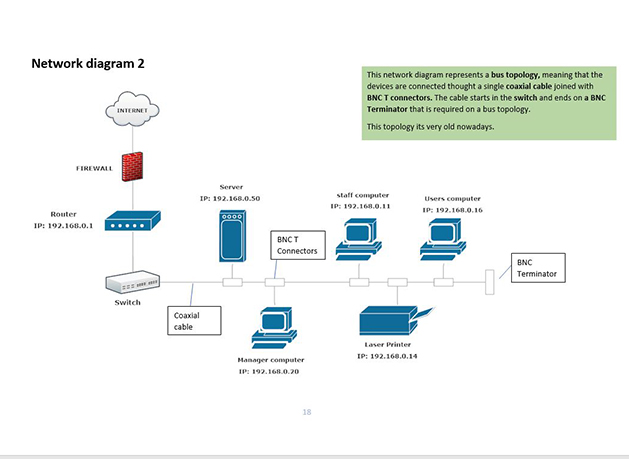
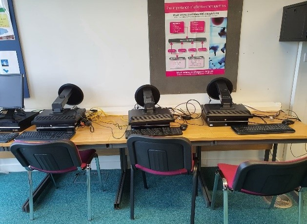
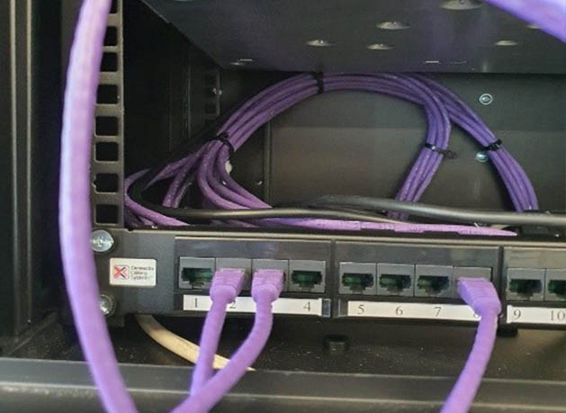
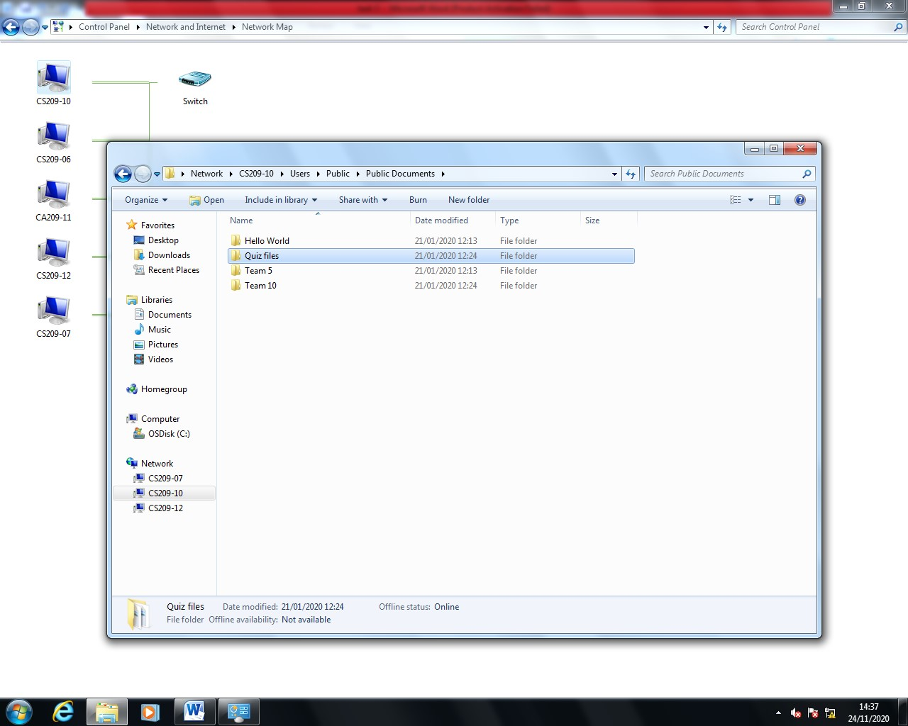

Unit 11 - Computer Networks
In this Unit I developed a computer network that uses a Peer-to-peer architecture in a Bus Topology with the main purpose to make the users in the network be able to share files and data between each other. In this web page I will show the development process to build the network.
Research process
Word document and Powerpoint presentation about computer networks and two different networks.

Word Document Research
To be able to buld the network I started searching for information about the network and comparing two different networks, the screenshot show all the information collected and its going to be used to create the powerpoint presentation.

PowerPoint Presentation
The pòwerpoint shows how computer networks can be different depends where are used for, in this case I Compared a computer network in a small office (LAN network) agains a computer network in a multiplayer gaming environment (WAN network).
Design Process
The design process takes into account the client's requirements to build the computer network. I created a plan based on the client's budget. This plan contains the software and hardware to be used, the counterins that can occur if something is missing, and two different designs to build the computer network.

Diagram 1
This is the first diagram plan I made for the computer network, it was done using the software "SmartDraw" and it represents a star topology.

Diagram 2
This is the second diagram plan I made for the computer network, it was done using the software "SmartDraw" and it represents a bus topology.
Development Process
View the Development documentation Click here It shows all the process step by step to develop the Network

Set-up computers
Those are the computers that I connected to the network but to do that first connected the power cable to the computers because they were all disconnected and connect the RJ-45 cable to the computers.

Link computers to the network
To Link all the compters to the network I connected the RJ-45 cable to a Switch so all the computers are linked together. The Switch was also disconnected so I connected the power cable and it turned on.

Network Map
This is the network map that shows all the computer connected to the network and it proves that its set-up correctly. You can see the process in the development documentation.

File sharing - Network
After show that the computer network its set-up I proceed to test it going into the public files from other users in the network and creating a folder to see if they can see it as well.